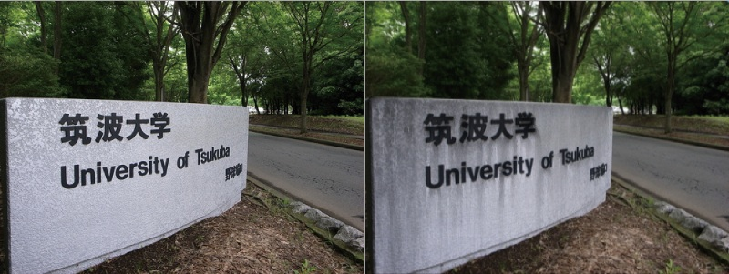

An Interactive Design System for Water Flow Stains on Outdoor Images
粒子シミュレーションによる水汚れ画像生成システム
Smart Graphics 2010
Yuki Endo, Yoshihiro Kanamori, Jun Mitani, Yukio Fukui
University of Tsukuba
Video
Abstract
Weathering and aging effects are essential for synthesizing realistic outdoor images in the field of film production and scene production. The problem here is that photographed materials do not yield desired images without editing, and manual painting requires laborintensive work as well as professional skills. In this paper, we focus on a salient aging effect, stains by water flows, and present a system that allows the user to add such stains directly and easily onto outdoor images. Our system represents a water droplet with a particle and simulates the dissolution, transport and sedimentation of deposits using particles in the regions specified by the user. In the simulation, realistic and complex stains can be obtained by accounting for the roughness of the surface where water flows. Furthermore, the user can adjust the amount of deposits according to the perspective in the image. The quick feedback of the simulation enables interactive manipulation. We demonstrate the effectiveness of our system through various results and user evaluations.
映像制作や景観予測のために, コンピュータグラフィックス(CG) によって景観の経年変化を写実的に再現することが求められている. しかし, 実写素材を用いても意図した画像を得るのは難しく, ペイントツールなどで編集するには専門的技術が必要な上, 非常に時間がかかる. 本研究では, 2 次元画像における建物の指定した領域に, 経年変化の中でも特に顕著な水汚れを簡易的に施すことができるシステムを提案する. 提案システムでは, 水を粒子の集合で表現し, ユーザが指定した領域において, 水による汚れの溶解, 運搬および沈着をシミュレーションする. 本システムは入力画像の輝度値の変化を物体表面の凹凸とみなし, 輝度値の変化量に基づきその凹凸に合わせた水汚れを生成する. それに加え, ユーザが入力画像のパースを簡単に指定することにより, 透視投影の効果を考慮したシミュレーションを行い, より自然な水汚れを生成することが可能である. シミュレーションは短時間で完了するため, ユーザは結果を見ながら対話的に操作できる.
Publication
- 遠藤 結城，金森 由博，三谷 純，福井 幸男: "粒子シミュレーションによる水汚れ画像生成システム", 情報処理学会論文誌, Vol.56, No.3, 2015.
- Yuki Endo, Yoshihiro Kanamori, Jun Mitani, Yukio Fukui: "An Interactive Design System for Water Flow Stains on Outdoor Images", In Proc. of smart graphics 2010, 2010-6. [PDF(8.5MB)]
- 遠藤 結城，金森 由博，三谷 純，福井 幸男: "粒子シミュレーションによる水汚れ画像生成システム", Visual Computing/グラフィクスとCAD合同シンポジウム2010, 2010-6 (優秀研究発表賞受賞).
- 遠藤 結城, 金森 由博, 三谷 純, 福井 幸男: "粒子シミュレーションによる水汚れ画像生成システム", NICOGRAPH 2010 春季大会, 2010-3.
Supplemental material
- Windows demo [zip]